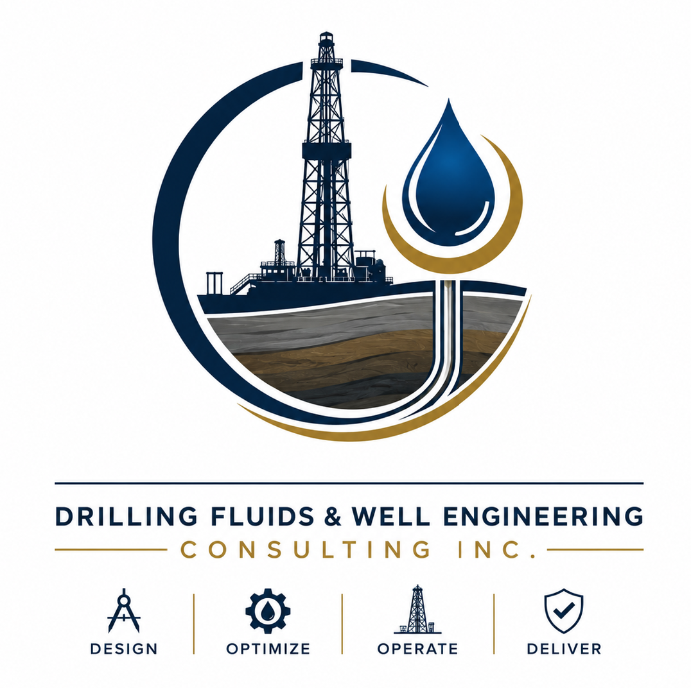
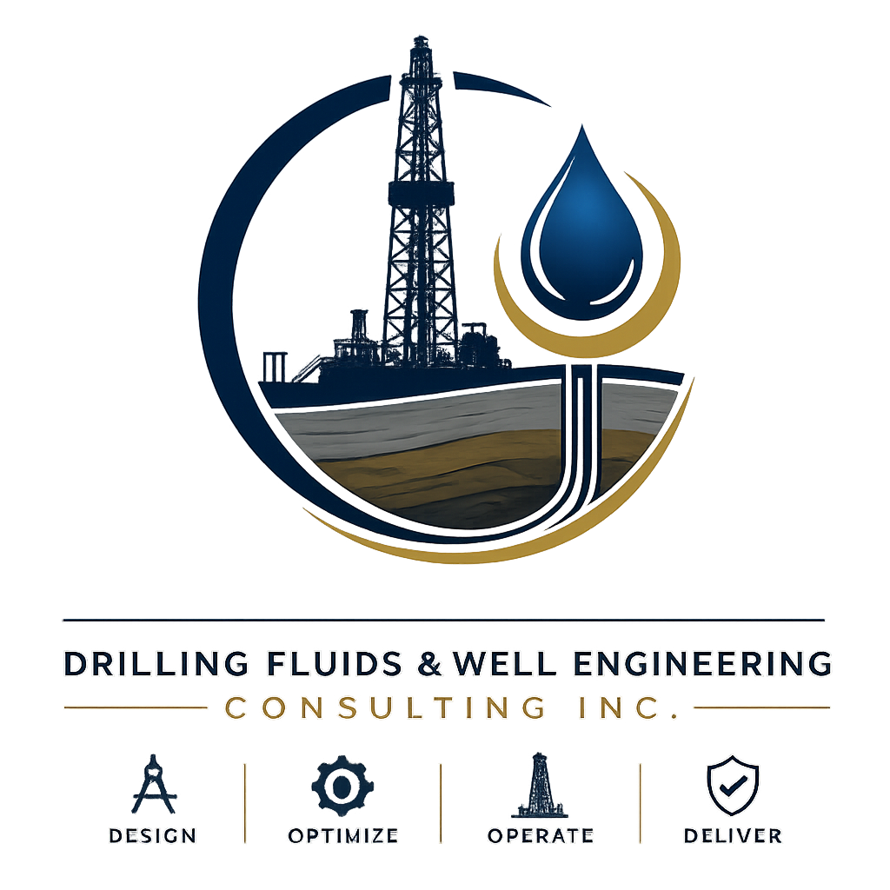

Drilling Fluids Engineering & Optimization
Mud program review, fluid property control, density, rheology, filtration, chemical treatments and performance improvements.

Senior Drilling Fluids • Wellbore Stability • Field Operations
30+ years of international experience supporting drilling fluids design, mud programs, field execution, troubleshooting, solids control and technical advisory across Canada, Argentina and Saudi Arabia.

What the company does today
Drilling Fluids & Well Engineering Consulting Inc. supports operators and service companies with the practical engineering required to keep wells stable, fluids under control and drilling performance aligned with cost, safety and operational targets.
Mud design, fluid properties, wellbore stability, solids control, troubleshooting and operational optimization.
Positioned for Fort McMurray, oil sands, thermal projects, conventional wells and remote technical advisory assignments.
Technical Services
Mud program review, fluid property control, density, rheology, filtration, chemical treatments and performance improvements.
Identification of instability risks, hole cleaning issues, losses, stuck pipe tendencies, swelling formations and corrective actions.
Operational recommendations to reduce NPT, improve drilling efficiency, support ROP objectives and maintain well control margins.
Shaker performance, dilution control, centrifuge strategy, mud losses, waste reduction and fluid lifecycle management.
Real-time support for crews, contractors and operators using field reports, lab data, mud checks and digital communication.
Hands-on field presence during active drilling, fluids supervision, daily reporting, contractor coordination and issue resolution.
Independent review of fluid systems, lessons learned, drilling programs, equipment setup, procedures and operational performance.
Practical training for crews and junior engineers on mud properties, field testing, reporting, safety and operational discipline.
Trend analysis for mud properties, solids, dilution, losses, ROP, NPT causes and decision support dashboards.
End-to-end advisory connecting fluids, drilling engineering, HSE, logistics, cost control and execution strategy.
Real field context


How the work is delivered
Well plan, formation risks, offset wells, fluid history, expected temperatures, pressures and operational constraints.
Fluid system selection, properties window, additives strategy, contingency plan and testing requirements.
Field supervision, mud checks, solids control, crew coordination, reporting and real-time troubleshooting.
Trend analysis, cost control, NPT prevention, lessons learned and recommendations for the next section or next well.
Safety • Technical discipline • Compliance
The website positions Carlos as a senior technical professional who understands that drilling fluids work must support safe operations, environmental control, documentation, traceability and consistent testing.
International background
More than three decades supporting oil and gas operations in different geological, operational and cultural environments. This experience is presented as a competitive advantage for operators that need mature judgment, field discipline and fast technical response.
Available for projects
Use this section for Carlos’ direct phone, email, LinkedIn and a formal project inquiry form.